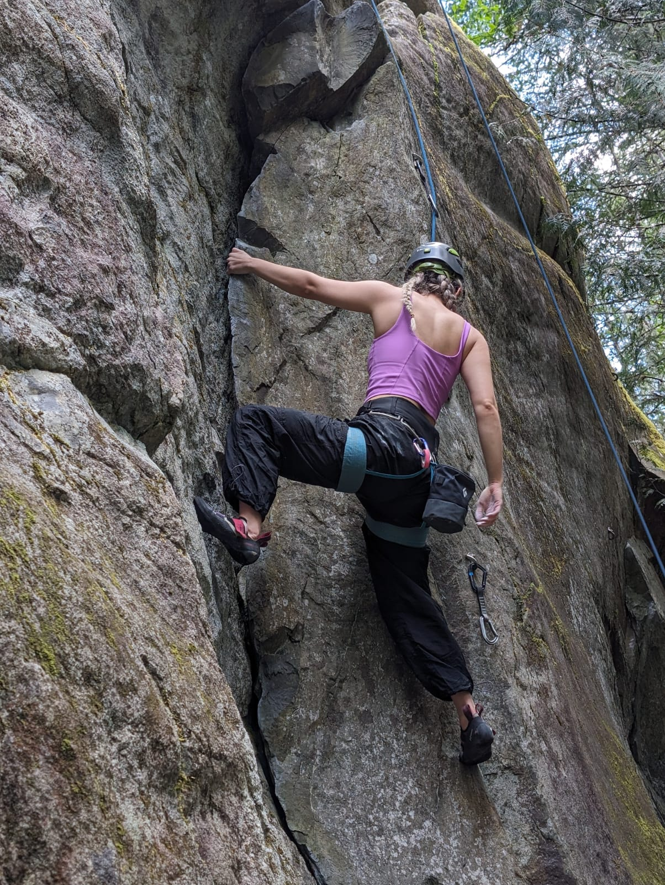
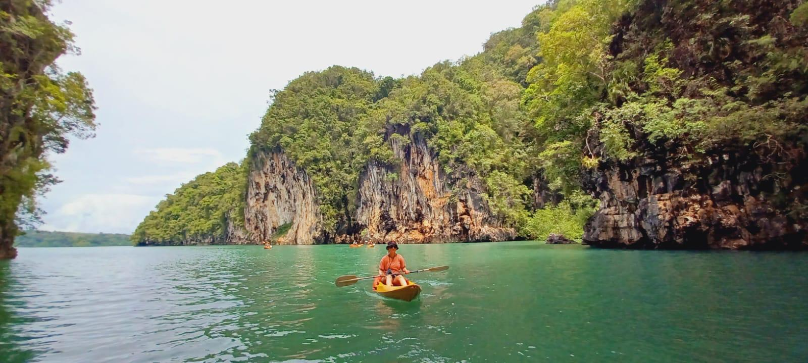

Designer by day, climber by night.
I've always enjoyed being creative and artistic my whole life. Being a UX designer allows me to use that creativity to help people, which I find so fulfilling. Similarly to UX design, rock climbing requires creativity to solve the 'problem' (the route).
Hey, I'm Bri!
I love solving problems using creativity and design.
I want to leave the world better than I found it, one design at a time. As designers, we have a responsibility to create ethically, for humans, and for the earth.
I'm very passionate about accessibility advocacy, and ensuring that a user experience is inclusive, for all people. My goal is to make a positive impact in peoples everyday lives through thoughtfully crafted design.

